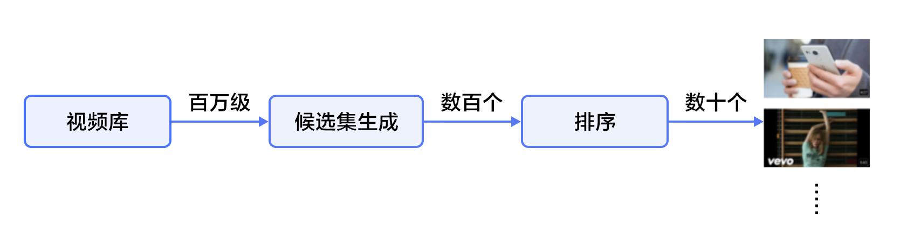

# 个性化推荐
本教程源代码目录在[book/recommender_system](https://github.com/PaddlePaddle/book/tree/develop/recommender_system)， 初次使用请参考PaddlePaddle[安装教程](http://www.paddlepaddle.org/doc_cn/build_and_install/index.html)。
## 背景介绍
在网络技术不断发展和电子商务规模不断扩大的背景下，商品数量和种类快速增长，用户需要花费大量时间才能找到自己想买的商品，这就是信息超载问题。为了解决这个难题，推荐系统（Recommender System）应运而生。
个性化推荐系统是信息过滤系统（Information Filtering System）的子集，它可以用在很多领域，如电影、音乐、电商和 Feed 流推荐等。推荐系统通过分析、挖掘用户行为，发现用户的个性化需求与兴趣特点，将用户可能感兴趣的信息或商品推荐给用户。与搜索引擎不同，推荐系统不需要用户准确地描述出自己的需求，而是根据分析历史行为建模，主动提供满足用户兴趣和需求的信息。
传统的推荐系统方法主要有：
- 协同过滤推荐（Collaborative Filtering Recommendation）：该方法收集分析用户历史行为、活动、偏好，计算一个用户与其他用户的相似度，利用目标用户的相似用户对商品评价的加权评价值，来预测目标用户对特定商品的喜好程度。优点是可以给用户推荐未浏览过的新产品；缺点是对于没有任何行为的新用户存在冷启动的问题，同时也存在用户与商品之间的交互数据不够多造成的稀疏问题，会导致模型难以找到相近用户。
- 基于内容过滤推荐[[1](#参考文献)]（Content-based Filtering Recommendation）：该方法利用商品的内容描述，抽象出有意义的特征，通过计算用户的兴趣和商品描述之间的相似度，来给用户做推荐。优点是简单直接，不需要依据其他用户对商品的评价，而是通过商品属性进行商品相似度度量，从而推荐给用户所感兴趣商品的相似商品；缺点是对于没有任何行为的新用户同样存在冷启动的问题。
- 组合推荐[[2](#参考文献)]（Hybrid Recommendation）：运用不同的输入和技术共同进行推荐，以弥补各自推荐技术的缺点。
其中协同过滤是应用最广泛的技术之一，它又可以分为多个子类：基于用户 （User-Based）的推荐[[3](#参考文献)] 、基于物品（Item-Based）的推荐[[4](#参考文献)]、基于社交网络关系（Social-Based）的推荐[[5](#参考文献)]、基于模型（Model-based）的推荐等。1994年明尼苏达大学推出的GroupLens系统[[3](#参考文献)]一般被认为是推荐系统成为一个相对独立的研究方向的标志。该系统首次提出了基于协同过滤来完成推荐任务的思想，此后，基于该模型的协同过滤推荐引领了推荐系统十几年的发展方向。
深度学习具有优秀的自动提取特征的能力，能够学习多层次的抽象特征表示，并对异质或跨域的内容信息进行学习，可以一定程度上处理推荐系统冷启动问题[[6](#参考文献)]。本教程主要介绍个性化推荐的深度学习模型，以及如何使用PaddlePaddle实现模型。
## 效果展示
我们使用包含用户信息、电影信息与电影评分的数据集作为个性化推荐的应用场景。当我们训练好模型后，只需要输入对应的用户ID和电影ID，就可以得出一个匹配的分数（范围[1,5]，分数越高视为兴趣越大），然后根据所有电影的推荐得分排序，推荐给用户可能感兴趣的电影。
```
Input movie_id: 1962
Input user_id: 1
Prediction Score is 4.25
```
## 模型概览
本章中，我们首先介绍YouTube的视频推荐系统[[7](#参考文献)]，然后介绍我们实现的融合推荐模型。
### YouTube的深度神经网络推荐系统
YouTube是世界上最大的视频上传、分享和发现网站，YouTube推荐系统为超过10亿用户从不断增长的视频库中推荐个性化的内容。整个系统由两个神经网络组成：候选生成网络和排序网络。候选生成网络从百万量级的视频库中生成上百个候选，排序网络对候选进行打分排序，输出排名最高的数十个结果。系统结构如图1所示：

图1. YouTube 推荐系统结构
#### 候选生成网络（Candidate Generation Network）
候选生成网络将推荐问题建模为一个类别数极大的多类分类问题：对于一个Youtube用户，使用其观看历史（视频ID）、搜索词记录（search tokens）、人口学信息（如地理位置、用户登录设备）、二值特征（如性别，是否登录）和连续特征（如用户年龄）等，对视频库中所有视频进行多分类，得到每一类别的分类结果（即每一个视频的推荐概率），最终输出概率较高的几百个视频。
首先，将观看历史及搜索词记录这类历史信息，映射为向量后取平均值得到定长表示；同时，输入人口学特征以优化新用户的推荐效果，并将二值特征和连续特征归一化处理到[0, 1]范围。接下来，将所有特征表示拼接为一个向量，并输入给非线形多层感知器（MLP，详见[识别数字](https://github.com/PaddlePaddle/book/blob/develop/recognize_digits/README.md)教程）处理。最后，训练时将MLP的输出给softmax做分类，预测时计算用户的综合特征（MLP的输出）与所有视频的相似度，取得分最高的$k$个作为候选生成网络的筛选结果。图2显示了候选生成网络结构。

图2. 候选生成网络结构
对于一个用户$U$，预测此刻用户要观看的视频$\omega$为视频$i$的概率公式为：
$$P(\omega=i|u)=\frac{e^{v_{i}u}}{\sum_{j \in V}e^{v_{j}u}}$$
其中$u$为用户$U$的特征表示，$V$为视频库集合，$v_i$为视频库中第$i$个视频的特征表示。$u$和$v_i$为长度相等的向量，两者点积可以通过全连接层实现。
考虑到softmax分类的类别数非常多，为了保证一定的计算效率：1）训练阶段，使用负样本类别采样将实际计算的类别数缩小至数千；2）推荐（预测）阶段，忽略softmax的归一化计算（不影响结果），将类别打分问题简化为点积（dot product）空间中的最近邻（nearest neighbor）搜索问题，取与$u$最近的$k$个视频作为生成的候选。
#### 排序网络（Ranking Network）
排序网络的结构类似于候选生成网络，但是它的目标是对候选进行更细致的打分排序。和传统广告排序中的特征抽取方法类似，这里也构造了大量的用于视频排序的相关特征（如视频 ID、上次观看时间等）。这些特征的处理方式和候选生成网络类似，不同之处是排序网络的顶部是一个加权逻辑回归（weighted logistic regression），它对所有候选视频进行打分，从高到底排序后将分数较高的一些视频返回给用户。
### 融合推荐模型
在下文的电影推荐系统中：
1. 首先，使用用户特征和电影特征作为神经网络的输入，其中：
- 用户特征融合了四个属性信息，分别是用户ID、性别、职业和年龄。
- 电影特征融合了三个属性信息，分别是电影ID、电影类型ID和电影名称。
2. 对用户特征，将用户ID映射为维度大小为256的向量表示，输入全连接层，并对其他三个属性也做类似的处理。然后将四个属性的特征表示分别全连接并相加。
3. 对电影特征，将电影ID以类似用户ID的方式进行处理，电影类型ID以向量的形式直接输入全连接层，电影名称用文本卷积神经网络（详见[第5章](https://github.com/PaddlePaddle/book/blob/develop/understand_sentiment/README.md)）得到其定长向量表示。然后将三个属性的特征表示分别全连接并相加。
4. 得到用户和电影的向量表示后，计算二者的余弦相似度作为推荐系统的打分。最后，用该相似度打分和用户真实打分的差异的平方作为该回归模型的损失函数。
图3. 融合推荐模型
## 数据准备
### 数据介绍与下载
我们以 [MovieLens 百万数据集（ml-1m）](http://files.grouplens.org/datasets/movielens/ml-1m.zip)为例进行介绍。ml-1m 数据集包含了 6,000 位用户对 4,000 部电影的 1,000,000 条评价（评分范围 1~5 分，均为整数），由 GroupLens Research 实验室搜集整理。
您可以运行 `data/getdata.sh` 下载数据，如果数椐获取成功，您将在目录`data/ml-1m`中看到下面的文件：
```
movies.dat ratings.dat users.dat README
```
- movies.dat：电影特征数据，格式为`电影ID::电影名称::电影类型`
- ratings.dat：评分数据，格式为`用户ID::电影ID::评分::时间戳`
- users.dat：用户特征数据，格式为`用户ID::性别::年龄::职业::邮编`
- README：数据集的详细描述
### 数据预处理
首先安装 Python 第三方库（推荐使用 Virtualenv）：
```shell
pip install -r data/requirements.txt
```
其次在预处理`./preprocess.sh`过程中，我们将字段配置文件`data/config.json`转化为meta配置文件`meta_config.json`，并生成对应的meta文件`meta.bin`，以完成数据文件的序列化。然后再将`ratings.dat`分为训练集、测试集两部分，把它们的地址写入`train.list`和`test.list`。
运行成功后目录`./data` 新增以下文件：
```
meta_config.json meta.bin ratings.dat.train ratings.dat.test train.list test.list
```
- meta.bin: meta文件是Python的pickle对象， 存储着电影和用户信息。
- meta_config.json: meta配置文件，用来具体描述如何解析数据集中的每一个字段，由字段配置文件生成。
- ratings.dat.train和ratings.dat.test: 训练集和测试集，训练集已经随机打乱。
- train.list和test.list: 训练集和测试集的文件地址列表。
### 提供数据给 PaddlePaddle
我们使用 Python 接口传递数据给系统，下面 `dataprovider.py` 给出了完整示例。
```python
from paddle.trainer.PyDataProvider2 import *
from common_utils import meta_to_header
def __list_to_map__(lst): # 将list转为map
ret_val = dict()
for each in lst:
k, v = each
ret_val[k] = v
return ret_val
def hook(settings, meta, **kwargs): # 读取meta.bin
# 定义电影特征
movie_headers = list(meta_to_header(meta, 'movie'))
settings.movie_names = [h[0] for h in movie_headers]
headers = movie_headers
# 定义用户特征
user_headers = list(meta_to_header(meta, 'user'))
settings.user_names = [h[0] for h in user_headers]
headers.extend(user_headers)
# 加载评分信息
headers.append(("rating", dense_vector(1)))
settings.input_types = __list_to_map__(headers)
settings.meta = meta
@provider(init_hook=hook, cache=CacheType.CACHE_PASS_IN_MEM)
def process(settings, filename):
with open(filename, 'r') as f:
for line in f:
# 从评分文件中读取评分
user_id, movie_id, score = map(int, line.split('::')[:-1])
# 将评分平移到[-2, +2]范围内的整数
score = float(score - 3)
movie_meta = settings.meta['movie'][movie_id]
user_meta = settings.meta['user'][user_id]
# 添加电影ID与电影特征
outputs = [('movie_id', movie_id - 1)]
for i, each_meta in enumerate(movie_meta):
outputs.append((settings.movie_names[i + 1], each_meta))
# 添加用户ID与用户特征
outputs.append(('user_id', user_id - 1))
for i, each_meta in enumerate(user_meta):
outputs.append((settings.user_names[i + 1], each_meta))
# 添加评分
outputs.append(('rating', [score]))
# 将数据返回给 paddle
yield __list_to_map__(outputs)
```
## 模型配置说明
### 数据定义
加载`meta.bin`文件并定义通过`define_py_data_sources2`从dataprovider中读入数据：
```python
from paddle.trainer_config_helpers import *
try:
import cPickle as pickle
except ImportError:
import pickle
is_predict = get_config_arg('is_predict', bool, False)
META_FILE = 'data/meta.bin'
# 加载 meta 文件
with open(META_FILE, 'rb') as f:
meta = pickle.load(f)
if not is_predict:
define_py_data_sources2(
'data/train.list',
'data/test.list',
module='dataprovider',
obj='process',
args={'meta': meta})
```
### 算法配置
这里我们设置了batch size、网络初始学习率和RMSProp自适应优化方法。
```python
settings(
batch_size=1600, learning_rate=1e-3, learning_method=RMSPropOptimizer())
```
### 模型结构
1. 定义数据输入和参数维度。
```python
movie_meta = meta['movie']['__meta__']['raw_meta']
user_meta = meta['user']['__meta__']['raw_meta']
movie_id = data_layer('movie_id', size=movie_meta[0]['max']) # 电影ID
title = data_layer('title', size=len(movie_meta[1]['dict'])) # 电影名称
genres = data_layer('genres', size=len(movie_meta[2]['dict'])) # 电影类型
user_id = data_layer('user_id', size=user_meta[0]['max']) # 用户ID
gender = data_layer('gender', size=len(user_meta[1]['dict'])) # 用户性别
age = data_layer('age', size=len(user_meta[2]['dict'])) # 用户年龄
occupation = data_layer('occupation', size=len(user_meta[3]['dict'])) # 用户职业
embsize = 256 # 向量维度
```
2. 构造“电影”特征。
```python
# 电影ID和电影类型分别映射到其对应的特征隐层（256维）。
movie_id_emb = embedding_layer(input=movie_id, size=embsize)
movie_id_hidden = fc_layer(input=movie_id_emb, size=embsize)
genres_emb = fc_layer(input=genres, size=embsize)
# 对于电影名称，一个ID序列表示的词语序列，在输入卷积层后，
# 将得到每个时间窗口的特征（序列特征），然后通过在时间维度
# 降采样得到固定维度的特征，整个过程在text_conv_pool实现
title_emb = embedding_layer(input=title, size=embsize)
title_hidden = text_conv_pool(
input=title_emb, context_len=5, hidden_size=embsize)
# 将三个属性的特征表示分别全连接并相加，结果即是电影特征的最终表示
movie_feature = fc_layer(
input=[movie_id_hidden, title_hidden, genres_emb], size=embsize)
```
3. 构造“用户”特征。
```python
# 将用户ID，性别，职业，年龄四个属性分别映射到其特征隐层。
user_id_emb = embedding_layer(input=user_id, size=embsize)
user_id_hidden = fc_layer(input=user_id_emb, size=embsize)
gender_emb = embedding_layer(input=gender, size=embsize)
gender_hidden = fc_layer(input=gender_emb, size=embsize)
age_emb = embedding_layer(input=age, size=embsize)
age_hidden = fc_layer(input=age_emb, size=embsize)
occup_emb = embedding_layer(input=occupation, size=embsize)
occup_hidden = fc_layer(input=occup_emb, size=embsize)
# 同样将这四个属性分别全连接并相加形成用户特征的最终表示。
user_feature = fc_layer(
input=[user_id_hidden, gender_hidden, age_hidden, occup_hidden],
size=embsize)
```
4. 计算余弦相似度，定义损失函数和网络输出。
```python
similarity = cos_sim(a=movie_feature, b=user_feature, scale=2)
# 训练时，采用regression_cost作为损失函数计算回归误差代价，并作为网络的输出。
# 预测时，网络的输出即为余弦相似度。
if not is_predict:
lbl=data_layer('rating', size=1)
cost=regression_cost(input=similarity, label=lbl)
outputs(cost)
else:
outputs(similarity)
```
## 训练模型
执行`sh train.sh` 开始训练模型，将日志写入文件 `log.txt` 并打印在屏幕上。其中指定了总共需要执行 50 个pass。
```shell
set -e
paddle train \
--config=trainer_config.py \ # 神经网络配置文件
--save_dir=./output \ # 模型保存路径
--use_gpu=false \ # 是否使用GPU(默认不使用)
--trainer_count=4\ # 一台机器上面的线程数量
--test_all_data_in_one_period=true \ # 每个训练周期训练一次所有数据，否则每个训练周期测试batch_size个batch数据
--log_period=100 \ # 训练log_period个batch后打印日志
--dot_period=1 \ # 每训练dot_period个batch后打印一个"."
--num_passes=50 2>&1 | tee 'log.txt'
```
成功的输出类似如下：
```bash
I0117 01:01:48.585651 9998 TrainerInternal.cpp:165] Batch=100 samples=160000 AvgCost=0.600042 CurrentCost=0.600042 Eval: CurrentEval:
...................................................................................................
I0117 01:02:53.821918 9998 TrainerInternal.cpp:165] Batch=200 samples=320000 AvgCost=0.602855 CurrentCost=0.605668 Eval: CurrentEval:
...................................................................................................
I0117 01:03:58.937922 9998 TrainerInternal.cpp:165] Batch=300 samples=480000 AvgCost=0.605199 CurrentCost=0.609887 Eval: CurrentEval:
...................................................................................................
I0117 01:05:04.083251 9998 TrainerInternal.cpp:165] Batch=400 samples=640000 AvgCost=0.608693 CurrentCost=0.619175 Eval: CurrentEval:
...................................................................................................
I0117 01:06:09.155859 9998 TrainerInternal.cpp:165] Batch=500 samples=800000 AvgCost=0.613273 CurrentCost=0.631591 Eval: CurrentEval:
.................................................................I0117 01:06:51.109654 9998 TrainerInternal.cpp:181]
Pass=49 Batch=565 samples=902826 AvgCost=0.614772 Eval:
I0117 01:07:04.205142 9998 Tester.cpp:115] Test samples=97383 cost=0.721995 Eval:
I0117 01:07:04.205281 9998 GradientMachine.cpp:113] Saving parameters to ./output/pass-00049
```
## 应用模型
在训练了几轮以后，您可以对模型进行评估。运行以下命令，可以通过选择最小训练误差的一轮参数得到最好轮次的模型。
```shell
./evaluate.py log.txt
```
您将看到：
```shell
Best pass is 00036, error is 0.719281, which means predict get error as 0.424052
evaluating from pass output/pass-00036
```
预测任何用户对于任何一部电影评价的命令如下：
```shell
python prediction.py 'output/pass-00036/'
```
预测程序将读取用户的输入，然后输出预测分数。您会看到如下命令行界面：
```
Input movie_id: 1962
Input user_id: 1
Prediction Score is 4.25
```
## 总结
本章介绍了传统的推荐系统方法和YouTube的深度神经网络推荐系统，并以电影推荐为例，使用PaddlePaddle训练了一个个性化推荐神经网络模型。推荐系统几乎涵盖了电商系统、社交网络、广告推荐、搜索引擎等领域的方方面面，而在图像处理、自然语言处理等领域已经发挥重要作用的深度学习技术，也将会在推荐系统领域大放异彩。
## 参考文献
1. [Peter Brusilovsky](https://en.wikipedia.org/wiki/Peter_Brusilovsky) (2007). *The Adaptive Web*. p. 325.
2. Robin Burke , [Hybrid Web Recommender Systems](http://www.dcs.warwick.ac.uk/~acristea/courses/CS411/2010/Book%20-%20The%20Adaptive%20Web/HybridWebRecommenderSystems.pdf), pp. 377-408, The Adaptive Web, Peter Brusilovsky, Alfred Kobsa, Wolfgang Nejdl (Ed.), Lecture Notes in Computer Science, Springer-Verlag, Berlin, Germany, Lecture Notes in Computer Science, Vol. 4321, May 2007, 978-3-540-72078-2.
3. P. Resnick, N. Iacovou, etc. “[GroupLens: An Open Architecture for Collaborative Filtering of Netnews](http://ccs.mit.edu/papers/CCSWP165.html)”, Proceedings of ACM Conference on Computer Supported Cooperative Work, CSCW 1994. pp.175-186.
4. Sarwar, Badrul, et al. "[Item-based collaborative filtering recommendation algorithms.](http://files.grouplens.org/papers/www10_sarwar.pdf)" *Proceedings of the 10th international conference on World Wide Web*. ACM, 2001.
5. Kautz, Henry, Bart Selman, and Mehul Shah. "[Referral Web: combining social networks and collaborative filtering.](http://www.cs.cornell.edu/selman/papers/pdf/97.cacm.refweb.pdf)" Communications of the ACM 40.3 (1997): 63-65. APA
6. Yuan, Jianbo, et al. ["Solving Cold-Start Problem in Large-scale Recommendation Engines: A Deep Learning Approach."](https://arxiv.org/pdf/1611.05480v1.pdf) *arXiv preprint arXiv:1611.05480* (2016).
7. Covington P, Adams J, Sargin E. [Deep neural networks for youtube recommendations](https://static.googleusercontent.com/media/research.google.com/zh-CN//pubs/archive/45530.pdf)[C]//Proceedings of the 10th ACM Conference on Recommender Systems. ACM, 2016: 191-198.
 本教程
本教程 由
PaddlePaddle 创作，采用
知识共享 署名-非商业性使用-相同方式共享 4.0 国际 许可协议进行许可。